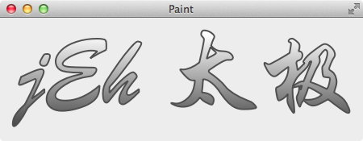

路径 QPainterPath，先引用一段 Qt 帮助文档里对路径的描述吧：
A painter path is an object composed of a number of graphical building blocks, such as rectangles, ellipses, lines, and curves. Building blocks can be joined in closed subpaths, for example as a rectangle or an ellipse. A closed path has coinciding start and end points. Or they can exist independently as unclosed subpaths, such as lines and curves.
A QPainterPath object can be used for filling, outlining, and clipping.
也就是说，路径可以由多个图形组成，例如矩形、椭圆、线、曲线、贝塞尔曲线等，一个路径可以和另一个路径合并，也可以从一个路径里扣掉另一个路径，路径可以用来创建复杂的图形，也可以用来限制绘图的区域实现特殊的效果等。
组合路径 下面的程序画了一个很奇怪的图形，用来演示 QPainterPath 添加线、贝塞尔曲线、矩形、扣去其他 QPainterPath 等，只要发挥你的想像，就可以用 QPainterPath 组合出很多复杂有趣的图形：
1 2 3 4 5 6 7 8 9 10 11 12 13 14 15 16 17 18 19 20 21 void ComplicatedPathWidget::paintEvent (QPaintEvent *) QPainter painter (this ) ; painter.setRenderHint (QPainter::Antialiasing); QPainterPath path; path.lineTo (100 , 0 ); path.cubicTo (200 , 0 , 100 , 50 , 200 , 100 ); path.closeSubpath (); path.addRect (50 , 50 , 50 , 50 ); QPainterPath path2; path2.addEllipse (80 , 30 , 50 , 50 ); path = path.subtracted (path2); painter.translate (20 , 20 ); painter.setBrush (Qt::lightGray); painter.drawPath (path); painter.setBrush (Qt::NoBrush); painter.drawRect (path.boundingRect ()); }
渐变填充文字 QPainterPath 还可以描绘和填充文字，这种效果在开发音乐播放器时，显示歌词常用到：

1 2 3 4 5 6 7 8 9 10 11 12 13 14 15 16 17 18 19 20 21 22 23 24 25 26 27 void TextPathWidget::paintEvent (QPaintEvent *) QPainter painter (this ) ; painter.setRenderHint (QPainter::Antialiasing); QString text ("jEh 太极" ) ; QFont font ("Xingkai SC" , 120 , QFont::Bold) ; QFontMetrics metrics (font) ; int x1 = 0 ; int y1 = 0 ; int x2 = 0 ; int y2 = y1 + metrics.height (); QLinearGradient gradient (x1, y1 + 40 , x2, y2) ; gradient.setColorAt (0 , QColor (255 , 255 , 255 )); gradient.setColorAt (1 , QColor (50 , 50 , 50 )); QPainterPath path; path.addText (x1, y1 + metrics.ascent (), font, text); painter.translate (20 , -20 ); painter.setBrush (gradient); painter.setPen (QPen (QColor (80 , 80 , 80 ), 2 )); painter.drawPath (path); }
由于字体的原因，计算出来的结果不够理想，做了一些微调，前面我们也提到过，字体不同时，会有细微的差别，为了实现更好的效果，有时需要手动微调一下，这里就遇到了这种情况。
沿路径运动 QPainterPath::pointAtPercent(qreal t) 是一个很有用的函数，t 的值为 [0, 1.0]，可以取得路径上任意一点的坐标，在动画一节里会使用这个函数来实现动画的插值函数，让物体沿着任意的路径运动，这里没有用 Qt 的动画框架实现了让物体沿着任意的路径运动：
1 2 3 4 5 6 7 8 9 10 11 12 13 14 15 16 17 18 19 20 21 22 23 24 25 26 #ifndef ANIMATIONALONGPATHWIDGET_H #define ANIMATIONALONGPATHWIDGET_H #include <QWidget> #include <QPainterPath> class AnimationAlongPathWidget :public QWidget { Q_OBJECT public : explicit AnimationAlongPathWidget (QWidget *parent = 0 ) ~AnimationAlongPathWidget (); protected : void timerEvent (QTimerEvent *event) Q_DECL_OVERRIDE void paintEvent (QPaintEvent *event) Q_DECL_OVERRIDE private : QPainterPath path; float percent; float step; int timerId; }; #endif
1 2 3 4 5 6 7 8 9 10 11 12 13 14 15 16 17 18 19 20 21 22 23 24 25 26 27 28 29 30 31 32 33 34 35 36 37 38 39 40 41 42 43 44 45 46 47 48 #include "AnimationAlongPathWidget.h" #include <QPainter> #include <QtGlobal> #include <QTimerEvent> AnimationAlongPathWidget::AnimationAlongPathWidget (QWidget *parent) : QWidget (parent) { step = 0.02 ; percent = 0 ; path.cubicTo (50 , 0 , 30 , 100 , 100 , 100 ); path.cubicTo (150 , 100 , 250 , 0 , 200 , 100 ); path.cubicTo (150 , 100 , 250 , 0 , 300 , 140 ); path.quadTo (150 , 310 , 150 , 100 ); timerId = startTimer (60 ); } AnimationAlongPathWidget::~AnimationAlongPathWidget () { } void AnimationAlongPathWidget::timerEvent (QTimerEvent *event) if (event->timerId () == timerId) { percent += step; if (percent < 0 || percent > 1 ) { step = -step; percent = qMin (percent, 1.0F ); percent = qMax (percent, 0.0F ); } update (); } } void AnimationAlongPathWidget::paintEvent (QPaintEvent *) QPainter painter (this ) ; painter.setRenderHint (QPainter::Antialiasing); painter.translate (20 , 20 ); painter.drawPath (path); painter.setBrush (Qt::red); painter.drawEllipse (path.pointAtPercent (percent), 4 , 4 ); }